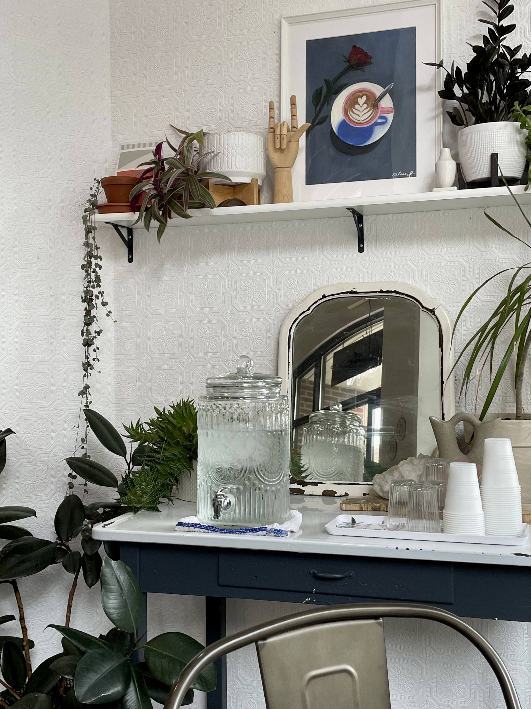

Tom and Joanna Yon started a three-part business: Tomukun KBBQ, Tomukun Noodle Bar, and Lab Cafe.
These establishments grew to become staples of Ann Arbor campus, becoming favorites of Umich Students.
Tomukun Website
Our Origin

Location
Address: 505 E Liberty St # 300, Ann Arbor, MI 48104
(Next to Tomukun)
Hours
Monday - Friday: 9AM - 6PM
Saturday & Sunday: 10AM - 6PM
Contact Information
Phone Number: 734-827-2233